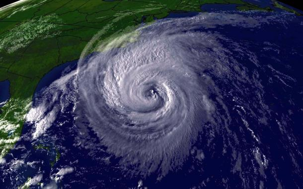
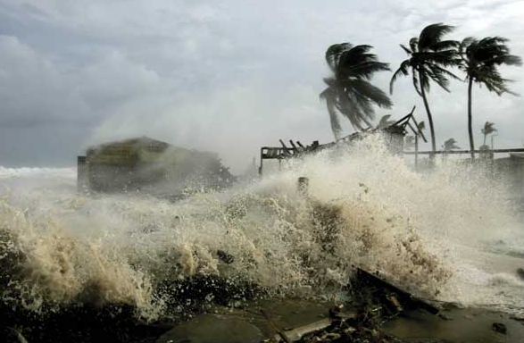

What is a tropical cyclone?
Tropical cyclone is a rapidly rotating storm system characterized by a low-pressure center, a closed low-level atmospheric circulation, strong winds, and a spiral arrangement of thunderstorms that produce heavy rain. Depending on its location and strength, a tropical cyclone is referred to by different names, including hurricane, typhoon, tropical storm, cyclonic storm, tropical depression, and simply cyclone. A hurricane is a tropical cyclone that occurs in the Atlantic Ocean and northeastern Pacific Ocean, and a typhoon occurs in the northwestern Pacific Ocean; while in the south Pacific or Indian Ocean, comparable storms are referred to simply as "tropical cyclones" or "severe cyclonic storms. The opposite direction of circulation is due to the Coriolis effect. Tropical cyclones typically form over large bodies of relatively warm water. They derive their energy through the evaporation of water from the ocean surface, which ultimately recompenses into clouds and rain when moist air rises and cools to saturation. This energy source differs from that of mid-latitude cyclonic storms, such as nor'easters and European windstorms, which are fueled primarily by horizontal temperature contrasts. Tropical cyclones are typically between 100 and 2,000 km (62 and 1,243 mi) in diameter.
How to survive from tropical cyclone?
Before the Storm:
*Create a hurricane survival kit
*Crank radio
*Walkie-Talkie
*Light sources
*First Aid kit
*Rations
*Water filtration system
*Paracord
*Flotation device
*Chem lights
*Turn off utilities
During the Storm:
Protect yourself from high winds and flooding:
*Evacuate when told to: If authorities have advised you to evacuate in your area, LISTEN TO THEM. Grab your emergency kit and load up your loved ones. If you’re unable to leave the storm area, take refuge in a designated storm shelter.
Safe places during a hurricane:
When winds whip up and rain starts assaulting your city, it’s important that you’re somewhere safe. The following locations provide the optimal level of protection during a hurricane:
*If trapped in a building by flooding, go to the highest level of the building.
*Lie on the floor under sturdy object such as a table.
*Stay away from windows and glass doors.